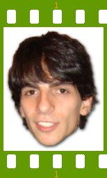

People of openSUSE: Francis Giannaros

Please introduce yourself!
I’m an undergraduate studying Mathematics and Philosophy at King’s College London. My origins are Greek, but I’ve been living in London for around the last 15 years now.
Tell us about the background to your computer use.
The first computer I ever used was a pretty ancient Macintosh which I unfortunately can’t remember the specs of. After that it was Windows for a few years until we discovered RedHat briefly, but we only really all adopted Linux with Mandrake 9.2, and I stayed with that until 10.1. Then I started playing around a bit more and tried SuSE, Fedora and Debian all quite briefly.
I switched to Kubuntu for quite a long time starting with late Warty and was very much a part of the community, but then made the move to SUSE at around 10.0 which my brother was using as well (formerly on Gentoo for quite some time). The transition was a little curious for a bit (I had really gotten used to debian-based distributions) but there was a lot of things really going for SUSE (polish, stability, quality of packages, availability of recent packages), and after that I now find it pretty tough to stay on any other distro because of the nice things that openSUSE has to offer.
When and why did you start using openSUSE/SUSE Linux?
I started pretty late, around 10.0 time. I really liked the way the distribution was delivered: great KDE with nice touch-ups, YaST, and the general very high quality of packages. It’s also nice to be in a distribution that is really driving innovation in the Linux world with various technologies.
When did you join the openSUSE community and what made you do that?
Around the same time I started using the distribution. I began hanging around on IRC and reading the mailing lists and eventually got more interested in various issues; I noticed there were plenty of small ways to contribute and help out, so I started with that.
In what way do you participate in the openSUSE project?
Mainly things like writing and editing articles on the wiki, bug reports, IRC and mailing list discussions still, launching openSUSE-Community.org, a little web-related stuff for the Software Portal, maintaining bugbot and most recently being an editor of the openSUSE News portal.
What especially motivates you to participate in the openSUSE project?
The belief that it’s a truly great project making Linux more and more accessible to users in a wonderful way. Also openSUSE, being a distribution with great innovation, it makes it fun and exciting to be around people who are bringing out such great technologies.
I’m also very happy about SUSE/Novell’s history and continued contribution to free and open source software.
What do you think was your most important contribution to the openSUSE project/community or what is the contribution that you’re most proud of?
Since I’m mainly involved in little things around the place there’s not any particularly big thing around, though openSUSE-Community.org work probably comes closest.
When do you usually spend time on the openSUSE project?
Whenever I have free time in the evenings.
Three words to describe openSUSE? Or make up a proper slogan!
I really liked openSUSE’s old implicit slogan of “the world’s most usable Linux”, as I really think it is and that it’s no small achievement. Three words for me personally? Green, Innovation, KDE =)
What do you think is missing or underrated in the distribution or the project?
Missing: a single live + install CD would be really nice for new users, I think, though I also of course love the option of a DVD which allows a user to install KDE or GNOME and has a larger selection of packages. With regard to the single CD, it looks like 10.3 will certainly ship with a single KDE and a single GNOME install CD option. A few people have been working on a live installer, like snorp so that’s one thing to watch out for!
Something else that is missing a little is more openSUSE marketing. In general this is partly an issue of Novell pushing/marketing for it even more (which is complicated, for sure), but also partly a need for more marketing contributions from the community.
Something that is really underrated in the non-SUSE world is YaST, the openSUSE Build Service, SUSE’s contributions to the Linux world, amount of available packages, and KIWI.
The Linux world seems to be plagued by ideas that YaST is slow because of the bad package management in 10.1, or other curious reasons. I don’t worry so much about the underrating of the build service as it’s really only a matter of time before it receives wider acknowledgement, and I think its strengths will come through even more obviously when the end-user interface is launched.
openSUSE also has so many packages available. Fortunately we have had, as of late, the package search which really makes this fact a little clearer.
Finally, KIWI is a really great application allowing you to create a selection of different images, such as live CD images, QEMU images, USB Live images, etc. There’s a nice YaST front-end in the works by Jiri, so soon even more people will be able to easily play with it. KIWI is important since it is the base for future openSUSE Live images, and better integration with the Build Service is planned. Of course it’s great for users because they can customise, say, a Live CD to give out to their friends.
What do you think the future holds for the openSUSE project?
There’s a lot of exciting things going on in openSUSE, and 10.3 looks set to be a really great release. Since pretty much all the features are in now it’s really a case of just making 10.3 a really robust and stable distribution, so everyone should start testing it and filing bug reports right away!
A person asks you why he/she should choose openSUSE instead of other distribution/OS. What would be your arguments to convince him/her to pick up openSUSE?
I’m mainly only really concerned about getting Windows/Mac users over to Linux rather than getting people to switch from Distribution X over to openSUSE. The killer arguments for Linux (and specifically openSUSE) are:
- Software Freedom
- Customisability
- Thousands of applications available at the click of a button
- Tight integration between applications
- The Linux community
Which members of the openSUSE community have you met in person?
Quite a few since I originally met all the guys doing talks at FOSDEM 2007, though Pascal Bleser and Benjamin Weber were also there which was great, and I later attended SUSE Hack Week in Nürnberg where there were hundreds of SUSE developers around.
How many icons are currently on your desktop?
Zero! I try to keep the desktop clean, but I’m not that afraid of having very temporary things on there.
What is the application you can’t live without? And why?
These days: Kickoff, SUSE’s KDE menu. After sampling other distributions that don’t have it I find things pretty painful.
Which application or feature should be invented as soon as possible?
I’ve always thought that a KDE front-end to the Gnutella network would be really nice; Limewire/Frostwire are not so great, and there’s barely any other alternatives. A feature that I miss in Amarok is an “All Collection” playlist that is dynamic rather than just “smart”. I only have a few thousand songs on Amarok, and I really can’t get myself to use specific playlist — I’d prefer it if the playlist just acted as the collection: automatically updating and collecting all my songs.
Which is your preferred text editor? And why?
Kate. Quick, well organised, handy features, and nicely extensible with Pate plugins. For smaller edits I like vim, and Quanta+ offers some nice features for larger web projects.
Which famous person would you want to join the openSUSE community?
Linus Torvalds? ;-)
Which computer related skills would you like to have?
I’m learning a little C++ in my spare time when I can get to it; knowing more of that and other programming languages would be good.
The Internet crashes for a whole week. How would you feel, what would you do?
Not that bad. Not using something when you have no access to it tends to not be that bad; the problem tends to be not using it when you do have access. I’d probably just hope I’d have those Wikipedia snapshots so I could still get some information when needed.
Which is your favorite movie scene?
Currently “This is Spartaaa” from 300. ;-)
Star Trek or Star Wars?
Star Wars for sure, though I’m more of a Lord of the Rings guy.
What is your favorite food and drink?
I’m a big fan of Thai food.
Favorite game or console (in your childhood and nowadays)?
Final Fantasy VII was my favourite game for a long time when I was young; these days I don’t really tend to play any.
Which city would you like to visit?
Buenos Aires, though I’d really like to go to South America in general.
What is your preferred way to spend your vacation?
On a beach bar!
Someone gives you $1.000.000. What would you do with the money?
Spend it before the dollar becomes even weaker ;-) . Probably travel around the world for a bit.
If traveling through time was possible. When would we be most likely to meet you?
Some time from the Renaissance up to the Seventeenth century. The changes in man’s consciousness in the scientific revolution and just after seem to be really bizarre, particularly in Mathematics and Philosophy. I wrote an essay on something similar to this once: francis.giannaros.org/files/historyofmathsphil.odt
There’s a thunderstorm outside. Do you turn off your computer?
Nope.
Have your ever missed an appointment because you forgot about it while sitting at your computer?
Many times, often lectures unfortunately.
Show us a picture of something, you have always wanted to share!
I take a lot of pictures; my flickr collection (though mostly private) is at flickr.com/photos/giannaros
You couldn’t live without…
My camera; it captures things that I want to remember.
Which question was the hardest to answer?
The previous one; had to battle my girlfriend when she realised that I did not mention her. ;-)
What other question would you like to answer? And what would you answer?
Perhaps “What music do you listen to?”, which for me is last.fm/user/apokryphos7